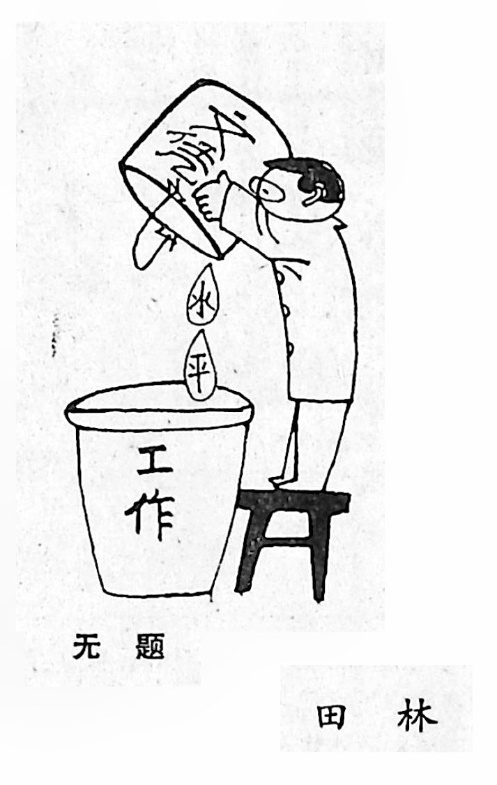

田林 《人事》1986年第4期（总第7期），第47页
无题
Untitled
- Text in the drawing
- 文凭 / 水 / 平 / 工作
Diploma / Level / Work - Description
- A man empties a bucket labeled 文凭 (diploma) into a vat labeled 工作 (work); only a couple of drops labeled 水平 (actual ability) come out.
- Artist
- Tian Lin 田林
- Published in
- 《人事》1986年第4期（总第7期）, p. 47
- Themes
- Diplomas and credentials

Cite
Tian Lin, “无题” [Untitled], Renshi (Personnel) 《人事》, 1986, no. 4, p. 47.